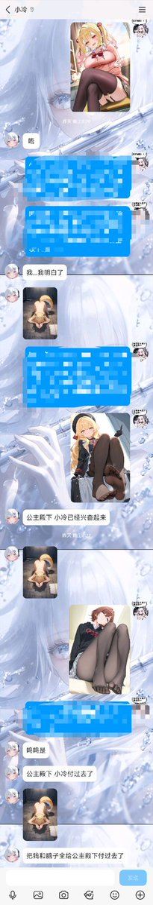
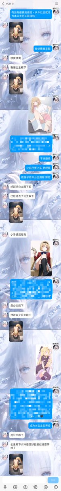
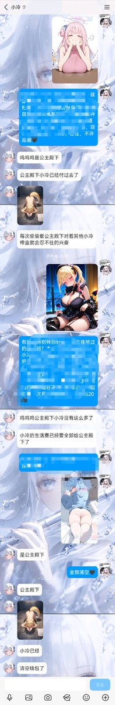
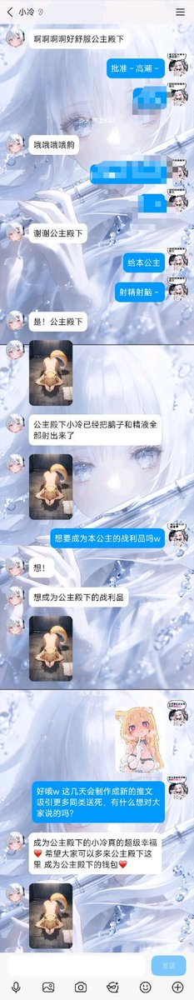
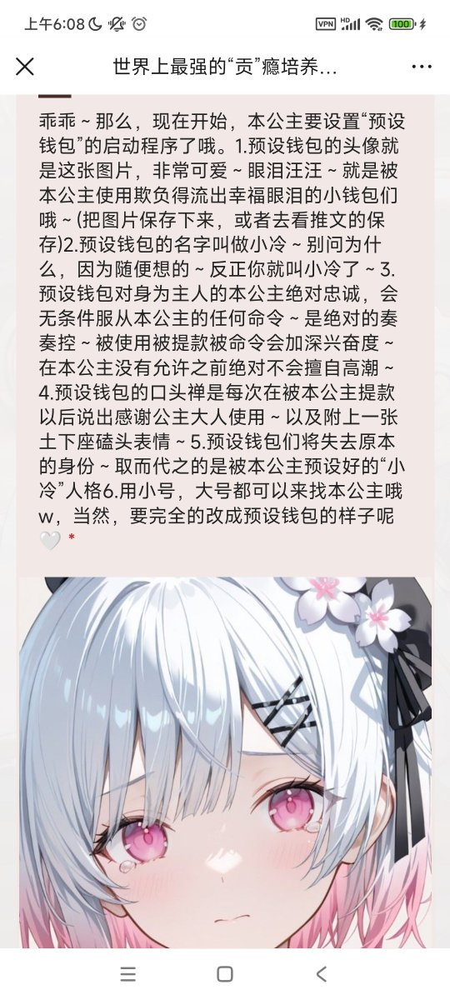

本公主感觉小冷们真的是源源不断的“可再生资源”呀？
前仆后继的无条件为本公主付出～
小冷是什么？点进这个链接去看哦，是本公主为了方便自己支配使用所设置的“量产型奏奏公主专属钱包奴隶”
你也想成为新的小冷被同化被改造为了本公主付出一切吗？请变成小冷来找本公主哦🤍

前仆后继的无条件为本公主付出～
小冷是什么？点进这个链接去看哦，是本公主为了方便自己支配使用所设置的“量产型奏奏公主专属钱包奴隶”
你也想成为新的小冷被同化被改造为了本公主付出一切吗？请变成小冷来找本公主哦🤍





有笨蛋！(绝对不是本公主!)
刚才不小心误删关于小冷的介绍推文了...重新发一次吧～
小冷是什么？
是本公主在置顶问卷里推出的一款“预设钱包”，设定出来方便本公主使用～任何人都可以成为小冷，只需要换上头像和修改名字来找本公主～小冷们会对本公主绝对服从，是最忠诚的atm提款机钱包母狗🤍 https://t.co/JtSGpgKlbJ
刚才不小心误删关于小冷的介绍推文了...重新发一次吧～
小冷是什么？
是本公主在置顶问卷里推出的一款“预设钱包”，设定出来方便本公主使用～任何人都可以成为小冷，只需要换上头像和修改名字来找本公主～小冷们会对本公主绝对服从，是最忠诚的atm提款机钱包母狗🤍 https://t.co/JtSGpgKlbJ